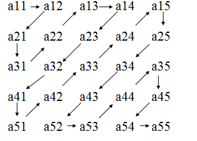

Cerinta
Andrei are o pasiune pentru trasul la țintă. Jucându-se cu numere, visează la o nouă tablă pentru pasiunea sa. Tabla visată este de formă pătrată cu
n linii și
n coloane, iar numerele, de la
1 la
n * n, le poziționează în țintă, ca în imaginea alăturată.
Andrei, fiind un foarte bun țintaș, nu nimerește niciodată pe pătrățelele de pe contur. Când țintește o pătrățică din interior, el obține drept punctaj suma valorilor din cele opt pătrățele vecine.

Cunoscând
n numărul de linii și de coloane ale țintei:
- Ajutați-l pe Andrei să construiască ținta visată.
- Câte punctaje distincte poate să obțină Alex dacă are o singură săgeată?
- Afișați punctajele distincte găsite.
Date de intrare
Fișierul de intrare
tinta.in conține pe prima linie numărul natural n, indicând numărul de linii și de coloane ale țintei.
Date de iesire
Fișierul de ieșire
tinta.out va conține pe primele
n linii câte
n numere naturale, separate prin câte un spațiu, reprezentând numerele de pe cele
n linii ale țintei. Pe linia
n+1 se va afișa un singur număr
p reprezentând numărul de punctaje distincte. Pe linia
n+2 se vor afișa
p numere naturale separate prin câte un spațiu și ordonate strict crescător, reprezentând punctajele distincte.
Restrictii si precizari
- 3 ≤ n ≤ 1000
- Pentru prima cerinţă afişată corect se va acorda 40% din punctaj; pentru a doua cerință se va acorda 20% din punctaj; pentru cea de-a treia cerință se va acorda 40% din punctaj.
Exemplu 1
tinta.out
1 2 6
3 5 7
4 8 9
1
40
Explicatie
Andrei poate ținti doar în pătrățelul interior (cel pe care avem 5), deci obține un singur punctaj, iar suma este 40.
Exemplu 2
tinta.out
1 2 6 7
3 5 8 13
4 9 12 14
10 11 15 16
3
45 68 91
Explicatie
Andrei poate ținti doar pătrăţelele 5, 8, 9 sau 12.
Solutie
Inainte de a vedea solutia, rezolva mai intai in Code::Blocks!